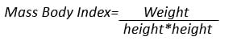

Predicting Obesity Category
Goal of the Project: We used data that was a mix of synthetic and authentic data collected from Colombia, Peru, and Mexico to predict obesity levels depending on some environmental and behavioral attributes. This analysis could enable a deeper understanding of obesity prevalence and expected incidence.
The data was obtained from UC Irvine Machine Learning Repository which can be accessed here.
Exploration and Data Cleaning
23% of the data was collected online via survey, while the remaining 77% was generated synthetically using WEKA and SMOTE. Further data synthesis information can be found on the Repository site. This prior data cleaning and synthesis was really helpful in balancing out the attributes and controlling over-representation.
Total Count = 2111
Independent Variables:
- Eating Habits- Frequent consumption of high caloric food (FAVC), Frequency of consumption of vegetables (FCVC), Number of main meals (NCP), Consumption of food between meals (CAEC), Consumption of water daily (CH20), and Consumption of alcohol (CALC).
- Physical Habits- Calories consumption monitoring (SCC), Physical activity frequency (FAF), Time using technology devices (TUE) Transportation used (MTRANS).
Other Variables: Gender, Age, Height, and Weight.
Dependent Variable: [NObesity] was created with the values of: Insufficient Weight, Normal Weight, Overweight Level I, Overweight Level II, Obesity Type I, Obesity Type II, and Obesity Type III.
Body Mass Index (BMI) Calculation
The Body Mass Index (BMI) is calculated as the weight in kilograms divided by the square of height in meters:
BMI = Weight (kg) / Height (m)2
Visualization